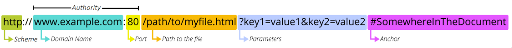
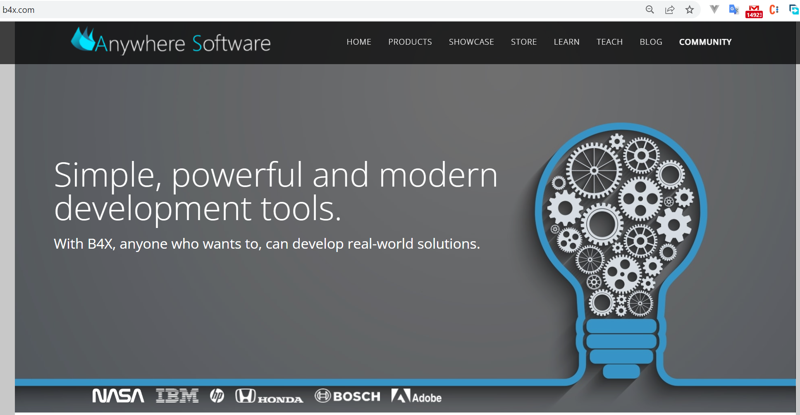
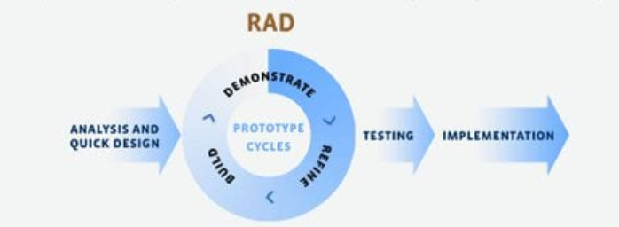

Introduction
Welcome to SithasoVant3
SithasoVant3 is a tool, a Mobile WebApp UIKit, to help anyone who wants to, to create mobile web based applications (apps). These apps are accessed from the internet. The internet is a collection of computers that are connected together by data streams. Due to the location or placements of these computers, when drawn, they resemble a spider web, thus being called the web.
Creating a web app, involves the process of creating an app that can be accessed anywhere within this web, no matter where one is in the world.
Whilst web apps can be accessed from cellphones and tablets, and even desktops, they are created and then saved on a computer that needs to be online, ie. connected to the web. The computers that host these apps are called web servers. They serve content to the web. People or other resources can then have access to them via a web browser, using a link or URL. There are a variety of these browsers that have been created, for example Google Chrome, Internet Explorer, Mozilla FireFox, Brave etc to browse content on the web. This web is also known as the internet, a global connection of computers that inter-connect. People use this to share content, talk to each other and all other forms of communication like playing games together in different continents etc etc.
To access something on the web, one needs its address, just like a postman needs your residential address to find your place. This address is called a Uniform Resource Locator, i.e. URL. Its friendly known as a link. A URL has to be unique, just like your residential address. A typical example of a URL is, https://www.b4x.com/. A URL is composed of different parts, some mandatory and others optional. These are indicated below.

In the URL, the scheme represents the postal service you want to use, the domain name is the city or town, and the port is like the zip code; the path represents the building where your mail should be delivered; the parameters represent extra information such as the number of the apartment in the building; and, finally, the anchor represents the actual person to whom you've addressed your mail.
Just like you write a letter using a language and then post it to be delivered by the postman, the "letters" ie web apps and websites that are created need a specific langauge, a language that an internet browser will understand. This language is made up of 3 parts, these being HTML, CSS and JavaScript. The browser, when you use the URL to find something, finds the webserver hosting the content for that specific address, and then loads the HTML, CSS and JavaScript used on that address and displays a page on the browser. As an example, typing https://www.b4x.com/ on your browser's address bar, displays a nicely formatted page.

Source: https://www.b4x.com (B4x website), April 15, 2022.
So what is HTML, CSS and JavaScript?
HTML
- HTML stands for Hyper Text Markup Language
- HTML is the standard markup language for creating Web pages
- HTML describes the structure of a Web page
- HTML consists of a series of elements
- HTML elements tell the browser how to display the content
- HTML elements label pieces of content such as "this is a heading", "this is a paragraph", "this is a link", etc.
- HTML files usually have a file extension .html or .htm
CSS
- CSS stands for Cascading Style Sheets
- CSS describes how HTML elements are to be displayed on screen, paper, or in other media
- CSS saves a lot of work. It can control the layout of multiple web pages all at once
- External stylesheets are stored in CSS files
- CSS files usually have a file extension .css
JAVASCRIPT
- JavaScript is a programming language that allows you to implement complex features on web pages — every time a web page does more than just sit there and display static information for you to look at — displaying timely content updates, interactive maps, animated 2D/3D graphics, scrolling video jukeboxes, etc. — you can bet that JavaScript is probably involved.
- JavaScript files usually have a file extension .js
Creating WebApps with SithasoVant3
You have an idea and want to share it with the world, why not create a web app for it and other people all over the world can use it? This is what companies like Facebook, Twitter, YouTube and many others have done. When you are creating a web app, you are performing a task known as programming. You need a PC and a programming language. As earlier indicated, the programming languages for the web are HTML, CSS and JavaScript.
You will create web apps with SithasoVant3 using B4X tools. The good thing is, you don't have to know HTML, CSS or JavaScript to do so. SithasoVant3 is also built using B4X. B4X is a Rapid Application Development (RAD) tool, using a cool programming language. The RAD approach is a form of ability to create and respond to change. It is called Agile app development and it prioritizes short times or great rates in development of releases. The RAD model emphasizes the use of software and user feedback over strict planning and requirements recording.
The SithasoVant3 User Interface Kit i.e. UIKit, deals with the look and feel i.e. UI, of your application and usually comes with pre-built elements ie the kits, to help one create a web application. The UI is what the person using your web app will see and interact with. This could be buttons, images, videos, music or sound etc. There are 77 UI elements in this SithasoVant3 UI Kit, to help one create powerful and engaging web applications.
When you open TikTok, or Facebook, or Twitter, Instagram, LinkedIn, Telegram etc, all these applications look and feel different when using them, they have different color schemes, animations etc and also provide a nice user interaction as they are simple, engaging and you find yourself using them over and over again. With the SithasoVant3 UIKit, the aim is for you to create such kind of web apps.
Also in RAD, there are 5 steps to be followed during the development of your app, these are...

Step 1: Define and finalize project requirements
During this step, stakeholders sit together to define and finalize project requirements such as project goals, expectations, timelines, and budget. When you have clearly defined and scoped out each aspect of the project's requirements, you can seek management approvals. Stakeholders are all the people who will be involved in developing the app. Questions like how much money is needed to realize their dreams should be answered, what will the app do and achieve, when can it be done by whom should be clearly defined.
Step 2: Begin building prototypes
As soon as you finish scoping the project, you can begin development. Designers and developers will work closely with clients to create and improve upon working draft until the final product is ready.
Step 3: Gather user feedback
In this step, prototypes and beta systems are converted into working models. Developers then gather user feedback to tweak and improve prototypes and create the best possible product.
Step 4: Test, test, test
This step requires you to test your app and ensure that all of its moving parts work together correctly and as the client expects.
Continue adding client feedback while the code is tested and retested to ensure a smooth, functioning final app.
Step 5: Present your system
This is the final step before the finished app goes to launched and available for everyone it needs to reach. It involves data conversion, user training, and (possibly) more testing.
Created with the Personal Edition of HelpNDoc: Easy EBook and documentation generator